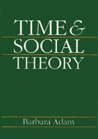

<body bgcolor="#FFFFFF" text="#000000" link="#0000FF" vlink="#CC0000" alink="#CC0000"><center><hr width="350" size="1" align="center" noshade>Exposing classical frameworks of thought as inadequate to the task of conceptualizing our contemporary world<hr width="350" size="1" align="center" noshade><p><a href="https://cdcshoppingcart.uchicago.edu/Cart/ChicagoBook.aspx?ISBN=9780877227885&&PRESS=temple" target="_top">Buy this book!</a> | <a href="https://cdcshoppingcart.uchicago.edu/Cart/Cart.aspx?PRESS=temple" target="_top">View Cart</a> | <a href="https://cdcshoppingcart.uchicago.edu/Cart/Cart.aspx?PRESS=temple" target="_top">Check Out</a></p><p></p></center><!--none//--><h1>Time and Social Theory</h1>
<h3>Barbara Adam</h3>
<P>cloth 0-87722-788-8 $39.95, Jan 91, <FONT COLOR=#990033>Out of Print</FONT>
<BR> 250 pp
</P><p>Time is at the forefront of contemporary scholarly inquiry throughout the humanities and the natural sciences. During the last twenty years, the study of time has fueled a rapidly growing exchange of ideas between different disciplines. Yet the social sciences have remained substantially isolated from time-related concerns in other fields. Taking on the task of changing that situation, this book is an exciting academic exercise in its own right. But more importantly, it serves to focus concern upon issues that have emerged as central to an adequate understanding of the social world in the late twentieth century.
<p>Through her analysis of time, Barbara Adam shows that our contemporary social theories are firmly embedded in Newtonian science and classical dualistic philosophy. She then exposes these classical frameworks of thought as inadequate to the task of conceptualizing our contemporary world of standardized time, computers, nuclear power, and global telecommunications.
<p>The author argues that the complex aspects of time should be made a key part of social theory especially if individuals are to take responsibility for their actions: past, present, and particularly the long term future. An explicit understanding of time Adam contends, generates not only a basis for a more adequate social theory, but a chance to be a participating agent in a world where human creations have all too often become the factor controlling human life. To grasp the multiplicity of time is to come to terms wit the complexity of our times.
<p>This book will be of great interest to anyone working in social theory, cultural theory, sociology, and philosophy.
<BR>&nbsp;<h2>Excerpt</h2><P>Excerpt available at <a href="http://www.temple.edu/tempress">www.temple.edu/tempress</a></p>
<BR>&nbsp;<h2>Contents</h2><P>
<p>Acknowledgments
<br>Introduction: Time is a Fact of Life
<p>1. Time in Social Theory: Destiny, Necessity, and Enigma
<br><I>The Diversity of Contemporary Approaches &#149
Dualisms and Disciplinary Isolation Rejected &#149
Making Distinctions Philosophy's Way &#149
All Time is Social Time &#149
Reflections</I>
<p>2. From the Measure of Motion to Entropy
<br><I>The Newtonian Measure &#149
Relative Time and Quantum Temporality &#149
Thermodynamic Change &#149
Reflections</I>
<p>3. Rhythmicity: Source of Life and Form
<br><I>Biorhythms: The Clock that Time Us and Know Time &#149
Organisms and the Machine Metaphor &#149
Living Change &#149
Reflections</I>
<p>4. Human Time Studied
<br><I>Aspects of Mind &#149
Time Budgeted &#149
Orientation and Perspectives &#149
The Life Cycle &#149
Social Change and Order &#149
Reflections</I>
<p>5. Industrial Time and Power
<br><I>Timed Social Life &#149
Social Time Controlled &#149
Waiting &#149
Reflections</I>
<p>6. Time Transcended
<br><I>Life Unto Death and Beyond &#149
The Extended Present and the Myth of Eternal Return &#149
The Future: Expanded, Colonized, and Lost &#149
The Past: Possessed, Recorded and Constructed &#149
Reflections</I>
<p>7. Time for Social Theory: Points of Departure
<br><I>Social Time and Natural Time Revisited &#149
Knowing through Metaphors &#149
Resonance and Non-hierarchical Levels &#149
Simultaneity and Extended Time-Spans</I>
<p>References
<br>Index
</P><BR>&nbsp;<H2>About the Author(s)</H2>
<P><b>Barbara Adam</b> is a British sociologist.</P>
<BR><H2>Subject Categories</H2>
<p><A HREF="/tempress/sociology.html" TARGET="_top">Sociology</a>
</p>
<p align="center"><a href="https://cdcshoppingcart.uchicago.edu/Cart/ChicagoBook.aspx?ISBN=9780877227885&&PRESS=temple" target="_top">Buy this book!</a> | <a href="https://cdcshoppingcart.uchicago.edu/Cart/Cart.aspx?PRESS=temple" target="_top">View Cart</a> | <a href="https://cdcshoppingcart.uchicago.edu/Cart/Cart.aspx?PRESS=temple" target="_top">Check Out</a></p><p><font face="Arial" size="1"><a href="copyright.html" onMouseOver="window.status='Web Copyright Policy';return true;" onMouseOut="window.status=''" title="Web Copyright Policy">&copy;</a> 2015 <a href="http://www.temple.edu" target="new" onMouseOver="window.status='Link to Temple University home page';return true;" onMouseOut="window.status=''" title="Link to Temple University home page">Temple University</a>. All Rights Reserved. http://www.temple.edu/tempress/titles/830_reg.html</font></p>